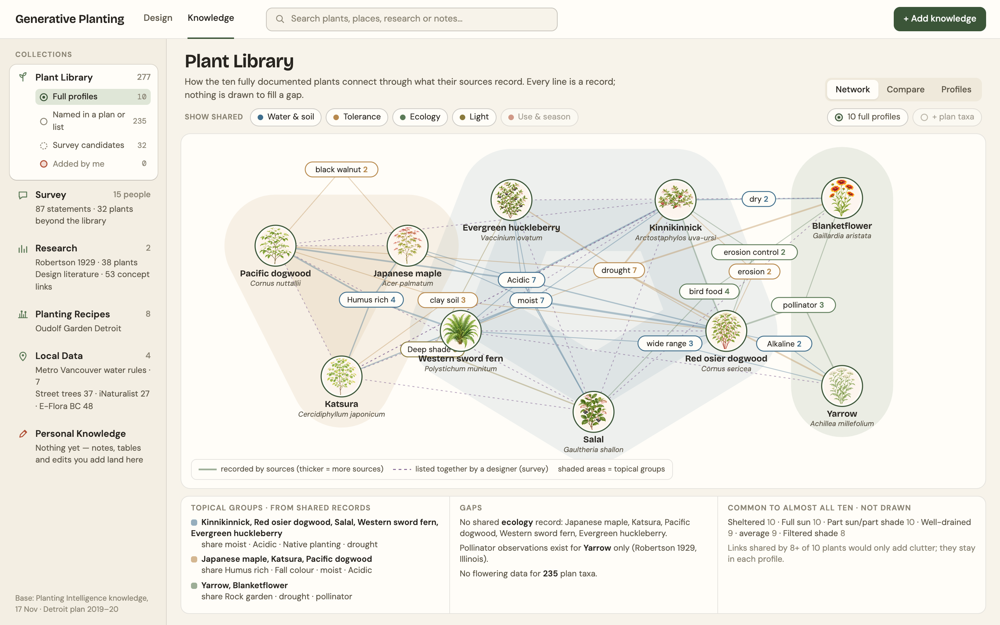
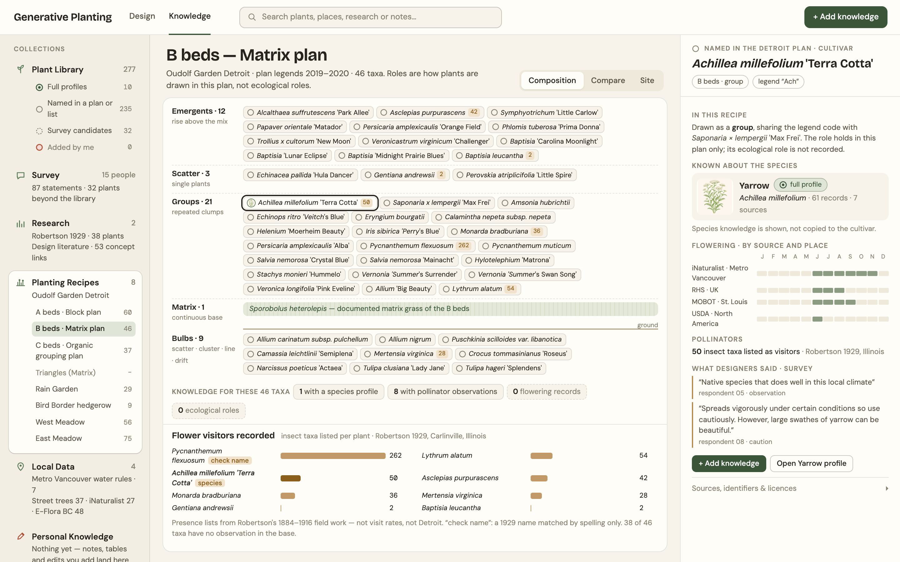
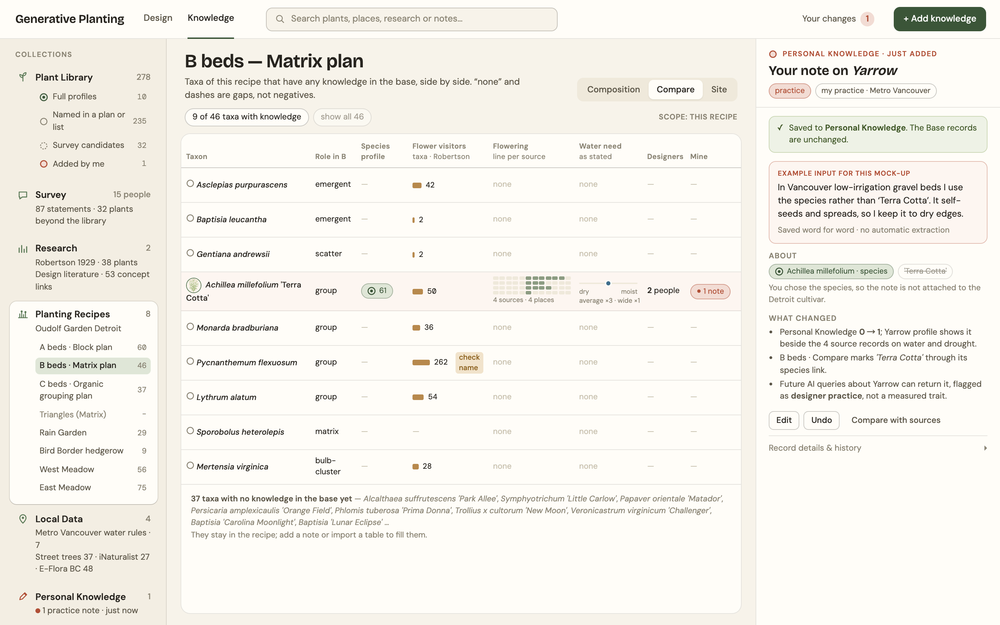
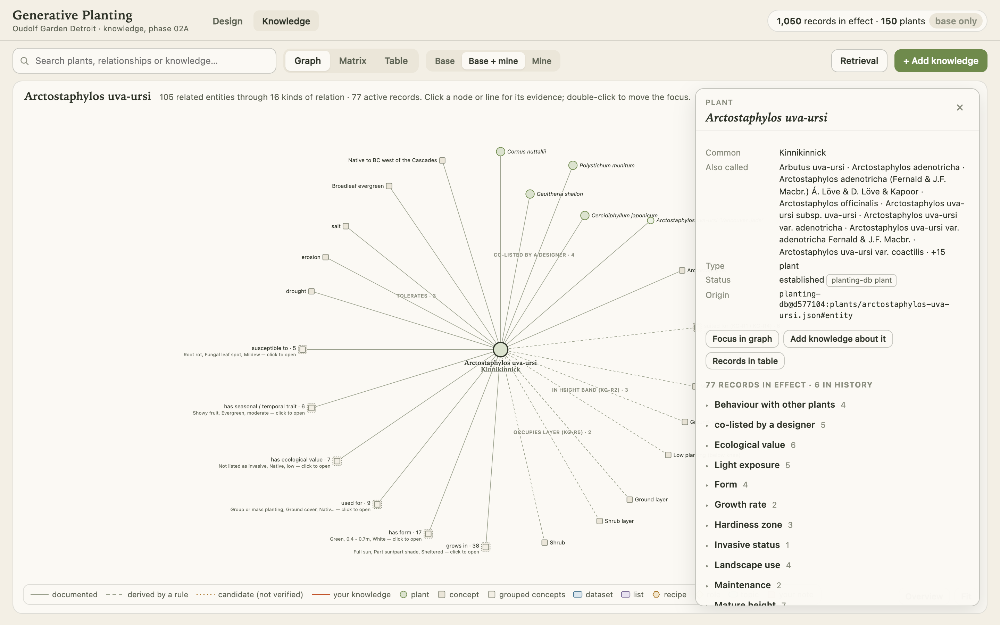
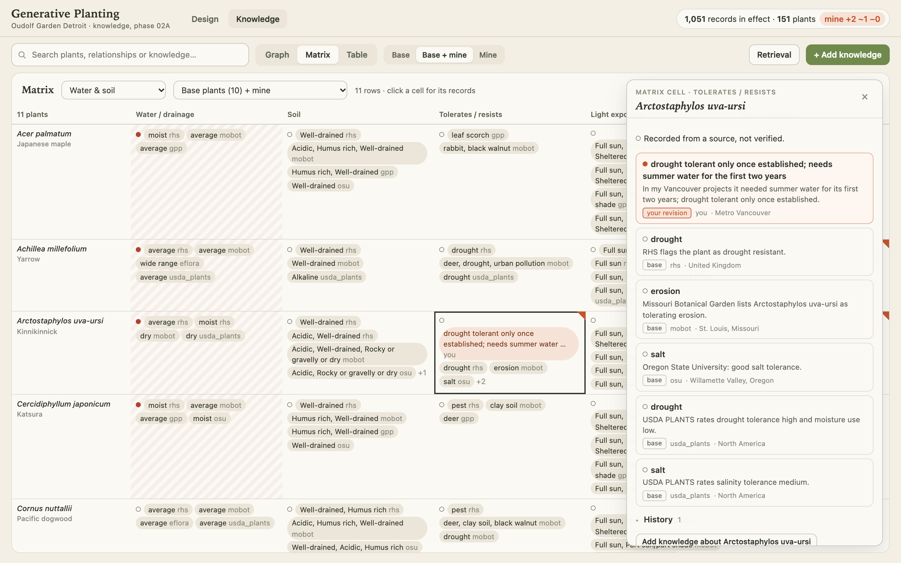
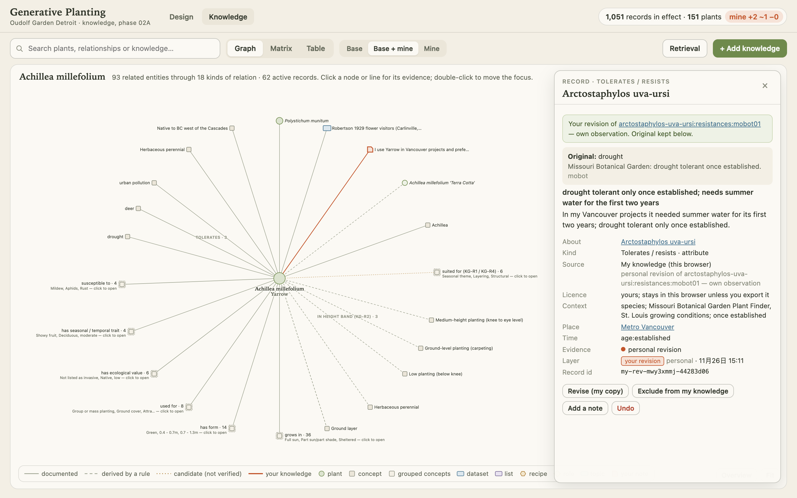

Knowledge 界面重组方案
从「数据库后台 + 三个通用视图」改为按真实知识集合组织的工作环境：左侧是集合，中间的可视化随集合内容变化，右侧 Inspector 只在选中时出现，并且会挤窄画布，不再遮挡内容。数据层（Base + Personal、持久化、检索接口）全部保留。
三张图都是高保真界面方案，渲染自真实数据：planting-db
d577104 + Detroit 种植图 + Robertson 1929 + Metro Vancouver 用水规定。图中每个数字、植物、连线和数值都由 tools/knowledge/mockup_data.py 从 seed 计算得出。唯一的假设内容是 C 图里那条用户笔记，图中已标注「Example input」。Phase 02A 代码保留在本地 tag knowledge-phase-02a，可以随时回退。空间模型没有改动。1 · 一个连贯的工作流程
设计师打开 Knowledge（A），进入 Planting Recipes 分析 Detroit B 床的组合，选中其中的 Yarrow 品种（B），随后补充自己在温哥华的使用经验，并在同一个 recipe 的比较视图里看到这条知识的位置（C）。



2 · 现有界面与新方案对照
Graph：从“单株属性放射图”到“共享记录网络”

Matrix：从“格子里堆原文”到“快速比较”

编辑与 Inspector：从“技术字段”到“说明发生了什么”

3 · 现有功能如何处置
| 处置 | 现有功能 | 新方案中的位置 |
|---|---|---|
| 保留 | Base + Personal 事件层、IndexedDB、导出/导入、撤销/重做；全部 records、sources、datasets；身份解析（别名、品种不合并）；修订 / 停用 / 恢复；window.GPK 与 kq.py；65 + 26 项测试 | 数据层和接口不变。界面只是换一种方式投影同一份有效数据。 |
| 合并 | 全局 Graph / Matrix / Table 三个标签 | 各集合自己的视图：Plant Library = Network · Compare · Profiles；Recipes = Composition · Compare · Site；Research = Observations · Rows。Table 不再是单独标签，而是每个 Inspector 里的「Records」以及集合内的行表。 |
| 合并 | Base / Base+mine / Mine 三态切换 | Personal Knowledge 作为一个集合，加上顶部「Your changes N」和比较表里的 Mine 列。“只看 Base” 移入 Details。 |
| 合并 | Add 对话框的四个标签页（Plant / Note / Table / File） | 一个渐进式输入框：先写文字或粘贴/拖入文件 → 系统识别对象 → 选择挂在物种还是品种 → 选择适用范围 → 保存。从 Inspector 进入时自动带上当前对象。 |
| Retrieval 抽屉与检索日志、record id、版本 hash、完整同义词列表、许可全文、AI source check、legacyRef、原始 JSON、「1,050 records in effect」计数 | 每个 Inspector 底部的「Sources, identifiers & licences ▸」「Record details & history ▸」；检索调试放进 Personal Knowledge 下的「AI access (advanced)」。数据都还在，只是不默认展示。 | |
| 重组 | Inspector 浮层 | 成为第三栏，打开时画布变窄（A 无 Inspector，B/C 有）。选中即聚焦：图、比较表和 Inspector 始终指向同一个对象。 |
| 重组 | 默认植物范围固定为十种 | 范围跟随集合：Plant Library → 10 个完整档案；Recipe → 该组合成员；Research → 有观察的植物；Local Data → Metro Vancouver。 |
| 重组 | 所有植物看起来一样 | 四种身份标记：完整档案（插画 + 实心环）、种植图/清单中的名称（空心环）、问卷候选（虚线环）、我添加的（橙色环）。品种挂在物种之下，但不合并。 |
| 移出默认 | “一株植物放射全部属性”的焦点图 | 作为单株档案里的「Relations」细节保留，不再作为默认图。 |
4 · 信息架构：集合 → 默认范围 → 适合的可视化
| 集合 | 真实内容（当前数据） | 默认范围 | 默认可视化 | 其他视图 |
|---|---|---|---|---|
| Plant Library | 10 个完整档案（48–72 条记录）· 235 个种植图/清单名称 · 32 个问卷候选 · 我添加的 | 10 个完整档案 | 共享记录网络（A） | Compare（快速比较）· Profiles（V4.3 插画卡片） |
| Survey | 15 位受访者，87 条陈述：55 个选择理由、9 条观察、6 条实践笔记、2 条提醒、15 组“一起列出”；另有库外 32 种植物及原话（例如：Miscanthus 雨后倒伏、需几年分株） | 全部陈述 | “设计师怎么说”：按主题汇总（Native 6、Evergreen 3…）并附原话，可跳到对应植物 | 受访者构成（只做汇总，不显示身份）· 库外植物 |
| Research | Robertson 1929：38 种植物、1,998 行；设计文献：53 条概念关系（Robinson、Rainer & West、Oudolf & Kingsbury、Mooney） | 有观察数据的植物 | 观察图表（带单位、地点、年代） | 原始行 · 概念关系 |
| Planting Recipes | Detroit 8 个组合：A 60、B 46、C 37、Rain Garden 29、Bird Border 9、West Meadow 56、East Meadow 75；Triangles 未记录物种 | 所选组合的成员 | 分层组合图（B） | Compare（C）· Site（链接到空间模型，只读） |
| Local Data | Metro Vancouver 用水规定 7 条（主题，不挂植物）· Vancouver 街道树 37 · iNaturalist 27 · E-Flora BC 48 | Metro Vancouver | 按主题和地点排列的规定与观察 | 来源与日期 |
| Personal Knowledge | 笔记、修订、停用、导入的表格与文件 | 我的全部变更 | 时间线 + 影响范围（撤销 / 重做） | 导出/导入 · AI access (advanced) |
物候（P44–52）不单独设标签：它出现在植物 Inspector 和 Compare 中，每条记录一行，按来源和地点分开。缺少物候数据的地方直接显示为空。
5 · A 图网络的生成规则（不制造连线）
- 节点：10 个完整档案植物，以及至少被 2 种、最多 7 种植物共享的来源概念。默认显示 Water & soil、Tolerance、Ecology、Light 四个主题，共 14 个概念。
- 边：只有当一条有效记录把这种植物和这个概念联系起来时才画线。线宽 = 独立来源数。问卷“一起列出”画为虚线，共 15 组，均为已记录的事实。
- 不画：8 种以上共有的概念（Sheltered 10、Full sun 10、Part sun 10、Well-drained 9、average 9、Filtered shade 8），只在一种植物上出现的概念，以及任何共现、相容关系。
- 分组：按共享概念做平均连接聚类，得到 3 组：湿润/酸性/本土种植的灌木与蕨（5）；腐殖质/秋色的乔木（3）；岩石园/耐旱/传粉的多年生（2）。分组只以阴影区域表示，并注明是由记录推导的。
- 缺口：没有共享生态记录的植物（5 种）；只有 Yarrow 有传粉观察；235 个种植图名称没有花期记录。
- 借鉴的交互机制（只借机制，不照搬素材）：Kumu 的 focus（按 N 度展开，Esc 恢复全图）、按字段聚类生成中心节点、选中后在侧栏显示档案（focus、clustering、profiles）；InfraNodus 用社区检测给主题分组着色、按中介中心性定节点大小、在侧栏列出主题和“结构缺口”（reading the graph、topical clusters、gaps）。这些产品文档没有说明侧栏是浮层还是会挤窄画布；本方案明确采用挤窄画布。
6 · 数据问题（截图 08 / 10 / 12 / 17 + 复查新发现）
| # | 出处 | 现象 | 原因 | 修正（确认后实施） |
|---|---|---|---|---|
| 1 | 08 | 温哥华的修订仍写着「St. Louis growing conditions; once established」，时间是 age:established，而内容讲的恰恰是建立期 | 修订时把原记录的 context 整体复制了过来 | 修订和观察都从空的 context 开始：只继承主体和谓词，地点默认取用户填写的地点或项目地点，原记录只作为“回应对象”关联 |
| 2 | 08 · 17 | 个人修订把 MOBOT 列为第二来源，检索结果显示 MOBOT 支持这条个人陈述 | 修订继承了原记录的 sourceRefs | 来源只写 “me”，原记录写入 respondsTo，不进入 sources |
| 3 | 08 | 设计师的观察被归类为 “attribute” | 修订继承了 knowledgeKind | 修订时选择或默认为 observation / practice，不默认 attribute |
| 4 | 08 | 图中显示 Yarrow，Inspector 却是 Kinnikinnick 的记录 | 选中对象和图的焦点分别维护 | 选中即聚焦，三个区域共享同一个选中对象 |
| 5 | 10 | 在 Table + Mine 下仍显示 Matrix 单元格的 Inspector，内容是 Base 记录；单元格摘要写“来自来源、未核实”，尽管其中有你的修订 | 切换视图或图层时没有更新 Inspector；单元格状态忽略个人记录 | 切换时让 Inspector 跟随或关闭；状态摘要单独说明「含你的修订」 |
| 6 | 10 | 「Mine」里看不到新增的 Acer griseum | 列表只列 records，新增实体不是 record | Personal Knowledge 时间线同时列出新增实体、记录、修订和停用 |
| 7 | 12 | 同一张清单中 “Achillea millefolium” 和 “Yarrow” 两行生成了两条 listed_in，计数变成 listed in 4 / 6 | 按行生成记录，没有按（植物，清单）去重 | 每个（植物，清单）只保留一条成员关系，记录多个原始行号；原始行全部保留 |
| 8 | 12 | 无法匹配的 “irrigation” 成为一条生效记录：「(no subject) irrigation is listed in …」，并计入 records in effect | 未匹配的行也生成了知识记录 | 未匹配的行只留在数据集和导入报告中（「1 行未匹配」），不生成知识记录，等用户处理 |
| 9 | 12 | 新建的 provisional 植物和已有植物看起来一样；清单名称直接用了文件名 | 没有身份标记；导入时没有询问标题 | 使用四种身份标记；导入时先确认清单标题和来源 |
| 10 | 17 | 你在温哥华写的修订被标成「place: different」（项目地点为 Metro Vancouver） | Base 已有 place:vancouver（标签就是 Metro Vancouver），我又新增了重复的 place:metro_vancouver；新增的 Detroit、Illinois 也没有上级地点 | 用水规定改挂 place:vancouver，新增地点接入现有层级（North America）；匹配结果分为相同 / 范围内 / 更大区域 / 其他地区 |
| 11 | 新 | Robertson 1929 的 38 个物种只是按拼写匹配。例如 Pycnanthemum flexuosum 在 1929 年前后的伊利诺伊文献里可能指今天的 P. tenuifolium，而 Oudolf 图里很可能是现代的同名种 | 历史名称没有做分类学核对 | 标记为「仅名称匹配 · 待核对」，作为线索显示，不当作已确立的植物知识；是否在核对前隐藏，需要你决定 |
| 12 | 新 | Base 中同一位受访者的同一句话出现两次（例如 Yarrow 的 sv02 / sv03），另有 2 条 “derived from the respondent's note” 记录 | 原库在不同字段各保存了一份 | 原数据不动；界面上合并为一条陈述，并注明“2 条记录，1 句原话” |
| 13 | 新 | synonyms.json 中 Yarrow 的名称列表混入了 rhs、eflora 等来源键 | 原库数据问题 | 迁移时已不作为别名（02A 已处理），建议同时在 planting-db 修正 |
7 · 确认后的实施顺序
- 先修数据问题 1–3、7、8、10：涉及 kb.js、ingest.js、build_seed 的地点部分；同步更新测试，并为每个问题新增回归测试。
- 搭建三栏外壳：Collections / Canvas / Inspector，Inspector 打开时画布让位；统一选中状态。
- Plant Library：共享记录网络（A）、Compare、Profiles（V4.3 插画）。
- Planting Recipes：分层组合图（B）和 Compare（C），默认范围为组合成员。
- Survey、Research、Local Data、Personal Knowledge 各自的默认视图。
- 渐进式 Add / Edit 输入框；把技术信息收进 Details。
- 重跑全部测试，重新截图，与这三张方案图逐项对照。空间模型保持不动。
需要你确认
- 三张图的方向和工作流程（A → B → C）是否可以开始实施？
- 网络图的取舍：“8 种以上共有的概念不画” 以及三个推导分组，是否保留？
- Robertson 的仅名称匹配：带「check name」标记显示（当前方案），还是在分类学核对前隐藏？
- Survey 中是否显示受访者编号（如 respondent 05），还是只显示汇总？